Planejamento da Verificação Final
Introdução
A verificação é uma das etapas mais importantes do desenvolvimento de um projeto. Nela os artefatos produzidos são analisados garantindo que os mesmos cumpram com os seus requisitos especificados.
Objetivos
O objetivo deste documento é verificar se os artefatos produzidos durante toda a execução do Trabalho da disciplina de IHC do Grupo 8 estão de acordo com o que foi estudado durante o semestre.
Metodologia
A metodologia escolhida para esta verificação é a inspeção. Desenvolvida originalmente para códigos de software por Fagan na IBM em 1976, essa técnica consiste em uma revisão formal dos artefatos produzidos a fim de se encontrar defeitos.
Essa revisão é realizada através de uma checklist onde se tem uma lista com os defeitos mais comuns que deverão ser identificados, analisados e classificados. Vale ressaltar que a leitura do artefato não deve ser feita pelo o autor do mesmo. Ao findar a verificação, será exibido um gráfico referente aos resultados obtidos.
Participantes
O responsável pelas verificações são os integrantes do Grupo 8: Márcio Henrique e Luiza Maluf, os quais realizam tanto a verificação do planejamento e do relato de seus resultados.
Cronograma
Tabela 1 - Cronograma
| Data | Descrição | Responsável |
|---|---|---|
| 03/02/2025 | Verificação final | Márcio Henrique e Luiza Maluf |
Autor: Márcio Henrique , 2025.
Lista de Verificação
Protótipo de alta Fidelidade
| ID | Pergunta | Referência | Responsável | Resposta |
|---|---|---|---|---|
| 1 | O prototipo utliliza mateiriais que se espera que esteja no produto final? | 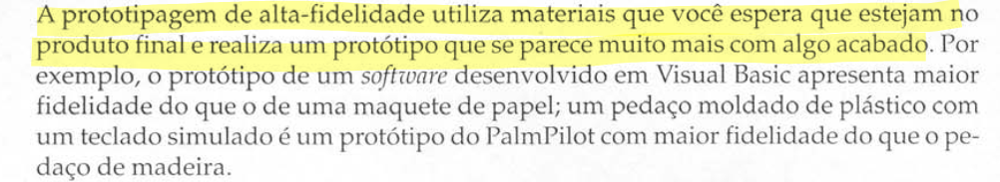 PREECE, Jennifer; ROGERS, Yvonne; SHARP, Helen. Design de interação: além da interação humano-computador. 3. ed. Porto Alegre: Bookman, 2013. Pg. 265 |
Márcio Henrique | Sim |
| 2 | O prototipo possui funcionidades que se espera no produto final? |  PREECE, Jennifer; ROGERS, Yvonne; SHARP, Helen. Design de interação: além da interação humano-computador. 3. ed. Porto Alegre: Bookman, 2013. Pg. 266 |
Sim | |
| 3 | O prototipo foi conduzido pelo ususário? ( no contexto do projeto foi de acordo com as necessidades dos perfis levantados)? | 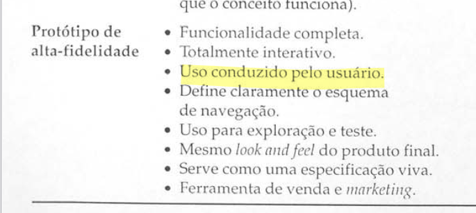 OCR. The OCR guide to storyboards.Pg 8. Disponível em: |
Márcio Henrique | Sim |
Storyboard
| ID | Pergunta | Referência | Responsável | Resposta |
|---|---|---|---|---|
| 1 | O storyboard possui um título claro e descritivo? | 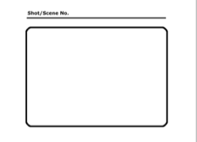 OCR. The OCR guide to storyboards.Pg 7. Disponível em: |
Luiza Maluf | Sim |
| 2 | Todos os quadros estão numerados de forma sequencial? |  OCR. The OCR guide to storyboards.Pg 8. Disponível em: |
Márcio Henrique | Sim |
| 3 | Há consistência na estrutura de cada quadro (mesmo formato e tamanho)? |  OCR. The OCR guide to storyboards.Pg 8. Disponível em: |
Luiza Maluf | Sim |
| 4 | O fluxo narrativo segue uma ordem lógica e coerente na visão do usuário? |  OCR. The OCR guide to storyboards.Pg 8. Disponível em: |
Márcio Henrique | Sim |
| 5 | O storyboard foi realizado em fomarto de papel, ou um softaware de design interativo? | Cada quadro inclui uma descrição textual breve e objetiva? |  OCR. The OCR guide to storyboards.Pg 8. Disponível em: |
Luiza Maluf |
| 6 | Cada quadro inclui uma descrição textual breve e objetiva? |  OCR. The OCR guide to storyboards.Pg 8. Disponível em: |
Márcio Henrique | Sim |
Personas
| ID | Pergunta | Referência | Responsável | Resposta |
|---|---|---|---|---|
| 1 | Foi dada a cada persona uma identidade, como nome e sobrenome, idade, dados demográficos e foto? | 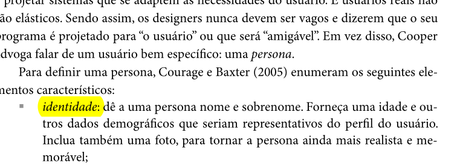 Fonte: Página 177, [1] |
Luiza Maluf | Conforme |
| 2 | Cada persona teve sua classificação foi definida e “Primária”, “Secundária”, “Anti-persona” ou “outro stakeholder” ? | 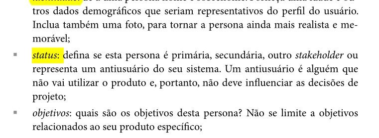 Fonte: Página 177, [1] |
Luiza Maluf | Conforme |
| 3 | As personas desenvolvidas, possuem seus objetivos definidos? ( objetivo pessoal, objetivo prático e objetivo) | 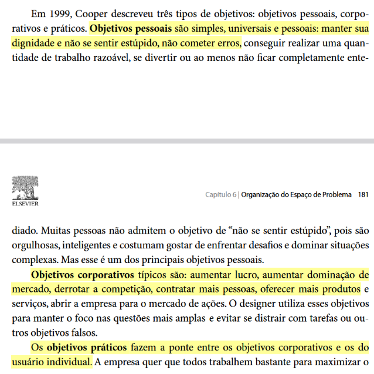 Fonte: Página 181, [1] |
Márcio Henrique | Conforme |
| 4 | Foi descrito quais tarefas básicas dizem respeito a cada persona, incluindo informações como “com qual frequência, duração e importância essas tarefas são realizadas? |  Fonte: Página 177, [1] |
Luiza Maluf | Conforme |
| 5 | A persona primária segue os princípios definidos para uma persona primária, como ser alguém que as necessidades devem ser satisfeitas e, principalmente, por uma interface projetada sob sua ótica? |  Fonte: Página 179, [1] |
Luiza Maluf | Conforme |
| 6 | A persona primária possui elasticidade? (Uma persona assume uma solidez tangível que coloca os pressupostos de design em perspectiva. À medida que uma persona perde sua elasticidade, podemos identificar suas habilidades, suas motivações e o que ela quer alcançar.) |  Fonte: Página 179, [1] |
Márcio Henrique | Não se aplica completamente |
Elenco de Pessoas
| ID | Pergunta | Referência | Responsável | Resposta |
|---|---|---|---|---|
| 1 | O elenco foi suficiente para cobrir os principais grupos de usuários, de forma que seja possível ajudar a desenvolver um produto que funciona para todos? | 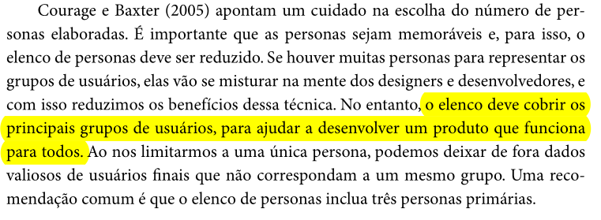 Fonte: Página 180, [1] |
Luiza Maluf | Conforme |
| 2 | No elenco, é utilizado tem entre 3-12 personas tais que atendem a ter no mínimo uma persona primária ? | 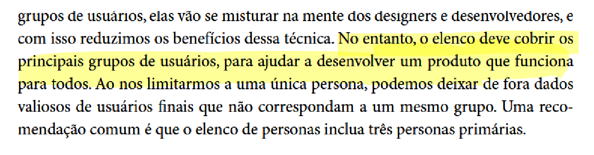 Fonte: Página 179, [1] |
Márcio Henrique | Conforme |
| 3 | O elenco de personas possui pelo menos uma persona primária? |  Fonte; Página 181, [1] |
Luiza Maluf | Conforme |
| 4 | O elenco cobre os principais grupos de usuários, para ajudar a desenvolver um produto que funciona para todos? | 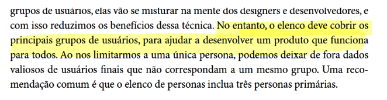 Fonte: Página 180, [1] |
Márcio Henrique | Conforme |
Cenários
| ID | Pergunta | Referência | Responsável | Resposta |
|---|---|---|---|---|
| 1 | Os cenários descrevem o comportamento e as expectativas dos atores/personas? |  Fonte: Página 183,[1] |
Luiza Maluf | Conforme |
| 2 | Os cenários possuem um enredo incluindo as sequências de ações e eventos que os usuários devem seguir, incluindo o que acontece com cada um deles, as mudanças de ambiente que eles sofrem e etc? |  Fonte: Página 183, [1] |
Luiza Maluf | Não se aplica completamente |
| 3 | Para cada cenário foi apresentado um ator principal e um objetivo principal, sendo que cada objetivo foi desdobrado em subobjetivos que dizem respeito as atividades de planejamento dos atores? | 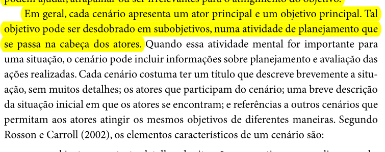 Página 183, [1] |
Luiza Maluf | Não se aplica completamente |
| 4 | Cada cenário possui os elemento característicos de um cenário, como, ambiente ou contexto, atores, objetivos, planejamento, ações, eventos, avaliação e etc? |  Fonte: Páginas 183 e 184, [1] |
Luiza Maluf | Conforme |
| 5 | Os cenários tem atores que condizem com as personas do projeto? |  Fonte: Página 184, [1] |
Márcio Henrique | Conforme |
Análise Hierárquica de Tarefas
| ID | Pergunta | Referência | Responsável | Resposta |
|---|---|---|---|---|
| 1 | Os objetivos tratados no HTA a serem alcançados são apresentados? | 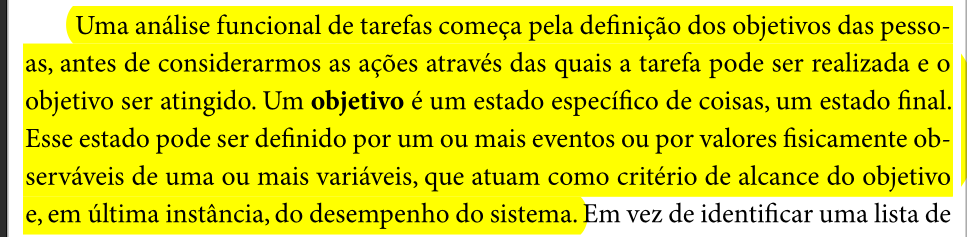 Fonte: Página 192, [1] |
Márcio Henrique | Conforme |
| 2 | As operações são especificadas no objetivo é ativado por meio de input ou entrada, pelas atividades ou ações (actions) que contribuem para atingi-lo? | 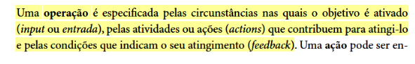 Fonte: Página 193, [1] |
Márcio Henrique | Conforme |
| 3 | A HTA está estruturada em objetivos de alto nível e subobjetivos? |  Fonte: Página 193, [1] |
Luiza Maluf | Conforme |
| 4 | A decomposição termina quando os objetivos são atingidos ou quando a origem de um erro é identificada? |  Fonte: Página 195, [1] |
Márcio Henrique | Conforme |
| 5 | As operações descrevem as diversas ações que devem ser desempenhadas para atingir o objetivo de cada tarefa? |  Fonte: Página 193, [1] |
Márcio Henrique | Conforme |
Planejamento da Avaliação com Framework DECIDE
| ID | Pergunta | Referência | Responsável | Resposta |
|---|---|---|---|---|
| 1 | Os objetivos gerais da avaliação foram definidos claramente? |  Fonte: Página 313,[1] |
Luiza Maluf | Conforme |
| 2 | A importância dos objetivos foi justificada? | 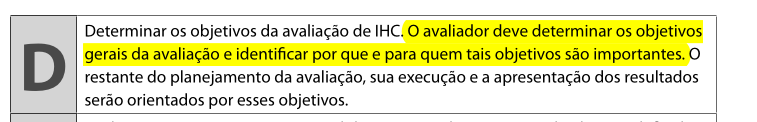 Fonte: Página 313, [1] |
Luiza Maluf | Conforme |
| 3 | O planejamento possui quais são as perguntas a serem respondidas com a avaliação? e devidamente referenciado | 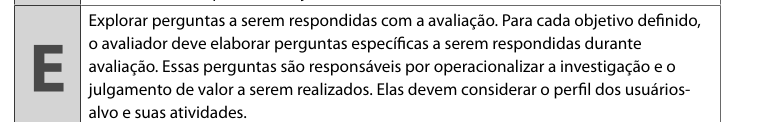 Fonte: Página 313, [1] |
Márcio Henrique | Conforme |
| 4 | O planejamento possui quais são os métodos a serem utilizados na avaliação? | 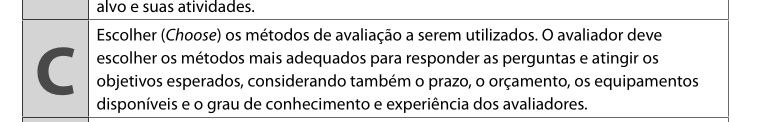 Fonte: Página 313,[1] |
Márcio Henrique | Conforme |
| 5 | As questões éticas foram identificadas e consideradas na avaliação? |  Fonte: Página 313,[1] |
Luiza Maluf | Conforme |
| 6 | O planejamento apresenta como serão documentados e ratados os dados obtidos durante o processo de avaliação? (Grau de confiabilidade das respostas, contexto em que as respostas foram produzidas e se os dados obtidos estão em conformidade com o perfil de usuário traçado.) | 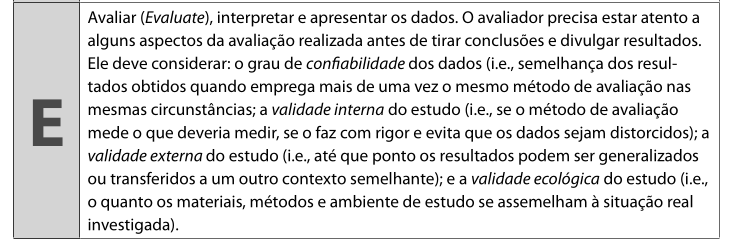 Fonte: Página 313, [1] |
Márcio Henrique | Não se aplica completamente |
| 7 | As conclusões foram comparadas com os objetivos iniciais da avaliação? | Fonte: Página 313, [1] |
Luiza Maluf | Conforme |
| 8 | O planejamento possui teste piloto? | 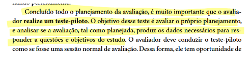 Fonte: Página 313, [1] |
Márcio Henrique | Não se aplica completamente |
Processo de Design
| ID | Pergunta | Referência | Responsável | Resposta |
|---|---|---|---|---|
| 1 | O processo de design escolhido detalha as atividades básicas de uma forma particular, definindo: como executar cada atividade; a sequência em que elas devem ser executadas; quais atividades podem se repetir, e por quais motivos; e os artefatos consumidos e produzidos em cada uma delas? |  Fonte: Página 99, [1] |
Luiza Maluf | Sim |
| 2 | A execução das atividades proposta pelo processo de Design escolhido é de forma interativa? | 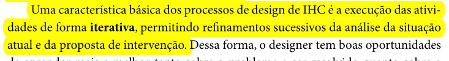 Fonte: Página 99, [1] |
Luiza Maluf | Sim |
| 3 | O artefato explica que as atividades podem se repetir conforma necessário? |  Fonte: Página 99, [1] |
Luiza Maluf | Sim |
| 4 | O artefato descreve a fase de análise de requisitos? | 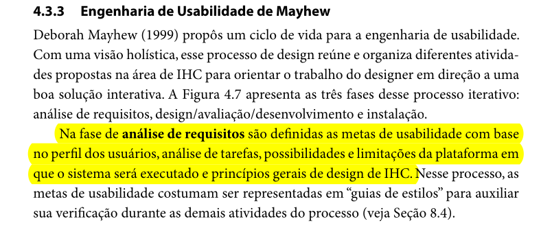 Fonte: Página 109, [1] |
Luiza Maluf | Sim |
| 5 | O artefato descreve a fase de design, avaliação e desenvolvimento? | 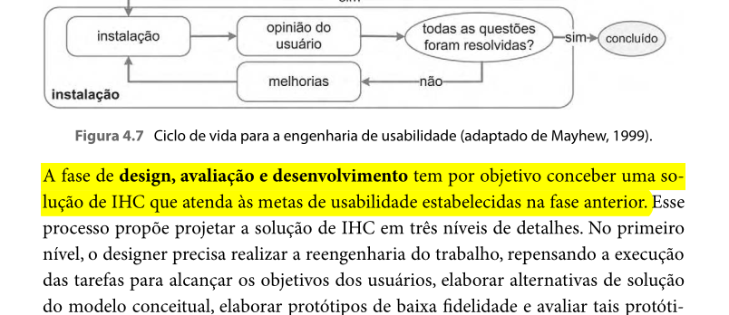 Fonte: Página 110, [1] |
Luiza Maluf | Sim |
Perfil do Usuário
| ID | Pergunta | Referência | Responsável | Resposta |
|---|---|---|---|---|
| 1 | O perfil de usuário produzido no artefato possui uma descrição detalhada das características dos usuários cujos objetivos são apoiados pelo sistema projetado? |  Fonte: Página 174, [1] |
Luiza Maluf | SIm |
| 2 | Foi identificado as características de interesse, como cargo, função, experiência, nível de instrução, atividades principais, faixa etária, dos potencias usuários? |  Fonte: Página 174, [1] |
Luiza Maluf | Sim |
| 3 | Foi conduzido um estudo para coletar os dados dos usuários, como entrevistas e questionários? | Fonte: Página 174, [1] |
Luiza Maluf | Sim |
| 4 | Foram agrupados em perfis os usuários com características semenlhantes e calculado a proporção de usuários que se encaixam em cada perfil? | 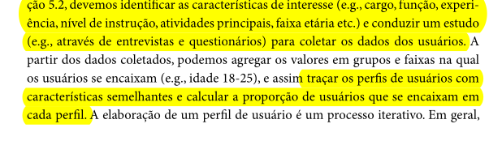 Fonte: Página 174, [1] |
Luiza Maluf | Sim |
Verificação Grupo Detran-DF
Referências Bibliográficas
Barbosa, S. D. J.; Silva, B. S. da; Silveira, M. S.; Gasparini, I.; Darin, T.; Barbosa, G. D. J. (2021);Interação Humano-Computador e Experiência do usuário.
Histórico de Versões
| Versão | Data | Descrição | Autor(es) | Revisor(es) |
|---|---|---|---|---|
1.0 |
03/02/2025 | Criação do documento e adição das listas. | LuizaMaluf | Márcio Henrique |